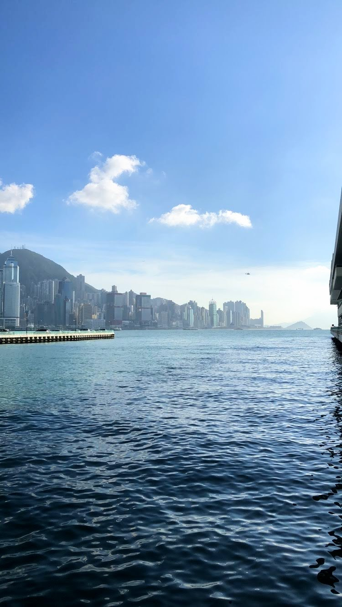

the gallery walk
the digital museum

sakshi harjani
mix of worlds
victoria harbour, hong kong
july 19, 2018
the photographer captured this image because of the mix of a body of water and mountains with buildings and other pieces of architecture. the water is in the foreground of this image, but the background of the landscape consisting of buildings is difficult to miss, showing how these two different ideas mesh together in our world.